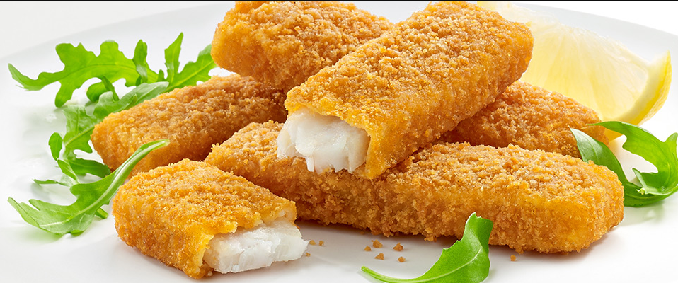

Jumbo fish fingers
GOLDEN CRISPY BREADCRUMBS

Makes 10 portions Cooks In 25 minutes prep, plus cooking Difficulty Not too tricky
INGREDIENTS
- 1 x 2 kg side of salmon, skin off, pin-boned, from sustainable sources
- 2 large free-range eggs
- 2 tsp sweet smoked paprika
- 250 g wholemeal bread
- 30 g Cheddar cheese
- extra virgin olive oil
METHOD
- Cut the fish into 10 x 120g portions. I tend to cut the side lengthways about 3cm thick, then into
chunks from that.
- In a shallow bowl:
- whisk the eggs with the paprika and a pinch of sea salt and black pepper.
- Tear the bread into a food processor, grate in the cheese, add 2 tbsp
of
oil and whiz until you have breadcrumbs, then tip into a tray.
- Coat each fish portion in the egg mixture, let any excess drip off, then turn in the breadcrumbs
until well coated all over.
- Transfer to a tray lined with greaseproof paper, layering them up between sheets of paper until
they're all coated.
- Cook right away or freeze in the tray - once frozen, you can pop them into a tub or sandwich
bags for easier storage.
- To cook:
- Place however many jumbo fish fingers you need on a roasting tray.
- Cook in a preheated oven at 200°C/400°F/gas 6 for 15 minutes from fresh, or 20 minutes
from frozen, or until golden and cooked through.
All comments:
This is a very fun recepie to follow.
- Ahmed Z.
This is my favorite recipe. I enjoy it
- Karim K.
Sign-up to receive new recipes:
LINKS
Search for other fish fingers recipes